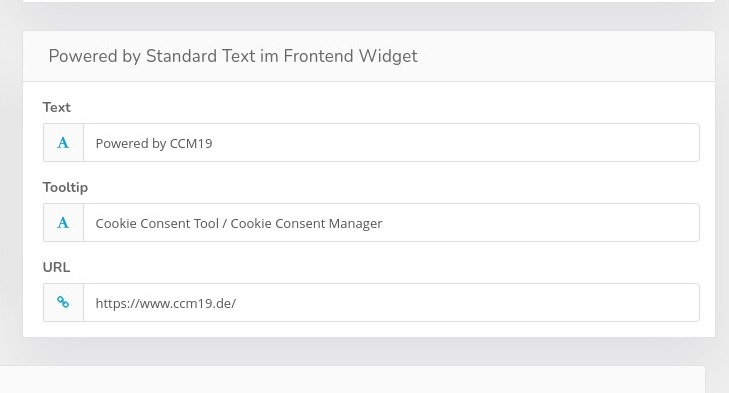
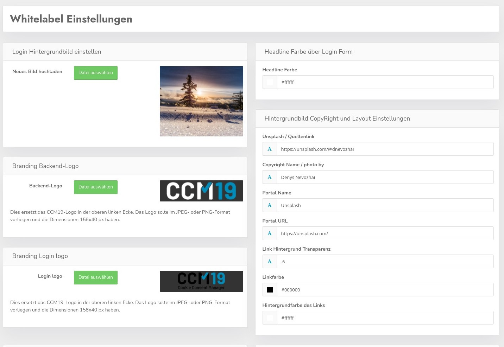
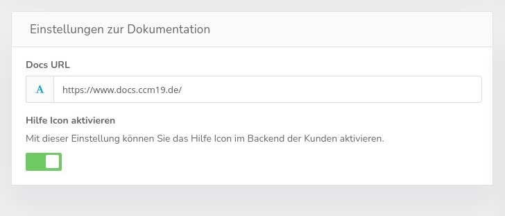
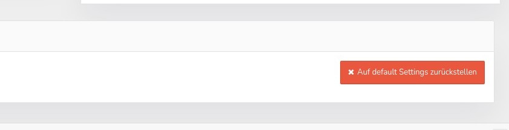

Unter Einstellungen steht Ihnen in der Standard Agency Version die Möglichkeit zur Verfügung verschiedene Einstellungen durchzuführen.
Alle Agentur Versionen können die folgenden Einstellungen ändern.

Das sind die Standard Whitelabel Links im Fuß der Widgets Ihrer Kunden. So können Sie von dort aus immer auf Ihre Seite verlinken lassen oder es komplett ausblenden. Das ist für jeden Ihrer Kunden möglich.
Es geht dabei um diesen Bereich.
In der Whitelabel Version stehen Ihnen an dieser Stelle wesentlich mehr Funktionen zur Verfügung, Sie können mit den verfügbaren Funktionen die Optik sowohl des Frontends als auch des Backends komplett an Ihre Ideen und CI anpassen.

Sie können das Hintergrundbild Ihrer Installation ändern indem Sie dort ein Bild hochladen. Auch die Credentials / Copyright Hinweise lassen sich dynamisch im rechten Bereich ändern.
Headline Farbe
Das ist die Farbe des Textes oberhalb des Loginbereiches
Quellenlink
Woher das Foto stammt - z.B. Unsplash
Name des Fotografen
Detaillierte Quellenangabe
Portal Name
Von welchem Bilderportal stammt es.
Portal URL
Die genaue URL des Portals.
Farben
Hier können Sie Linkfarbe, Transparenz und Hintergrundfarbe des Linkbereiches ändern.
Sie können in dem Bereich eigene Logos hochladen sowohl für das Backend als auch für die Loginmaske.

Hier kann man nun auch die Dokumentation auf eine eigene Installation verlinken lassen, so macht die Nutzung des Github Repos auch wirklich Sinn. Das läßt sich dann klonen und daraus dann eine eigene Doku Installation realisieren die dann auch direkt mit der Oberfläche verbunden ist.
Zusätzlich kann man das Hilfe Icon ausblenden so man denn möchte. Damit es da nicht zu uns verlinkt falls man keine WL Doku hat.

Der rote Reset Button setzt alle Einstellungen wieder auf Standard zurück und löscht alle was da drin geändert wurde